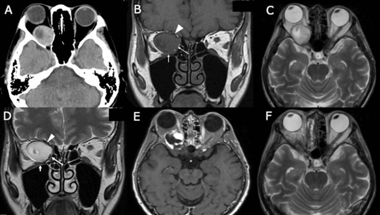
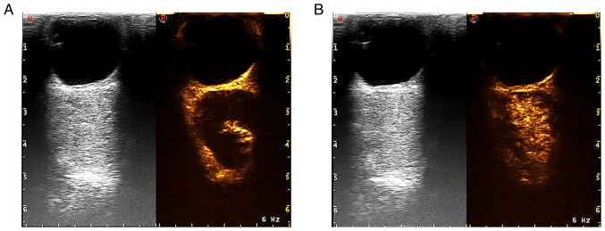
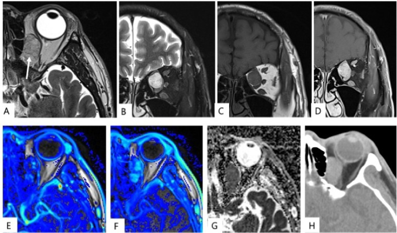
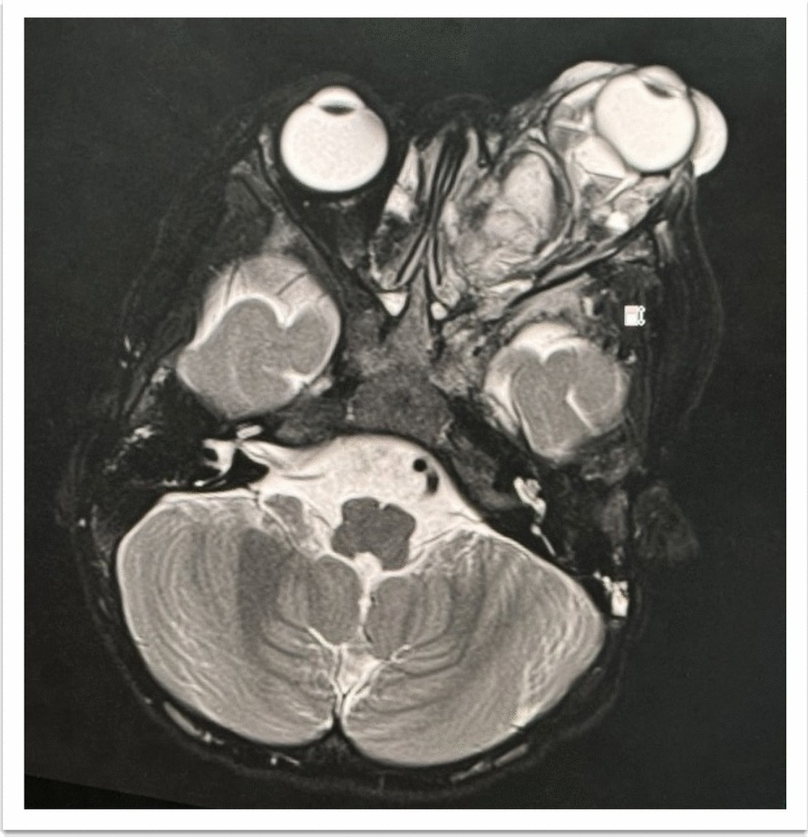
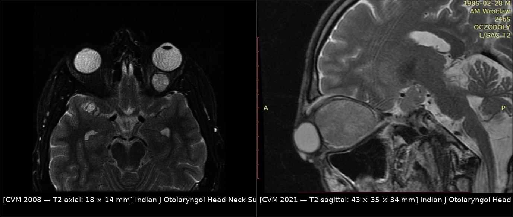

3250 — U mạch máu thể hang hốc mắt: T2 rất sáng + ngấm thuốc tiến triển / Orbital cavernous venous malformation
Tags: pattern:khoi-hoc-mat pattern:trong-non pattern:t2-rat-sang pattern:ngam-tien-trien pattern:khong-han-che-khuech-tan pattern:duong-t2-thap-tuyen-tinh pattern:phebolith pattern:khong-gian-theo-valsalva vung:mat vung:hoc-mat protocol:MRI-hoc-mat protocol:CT-lat-mong protocol:DWI-ADC protocol:DCE protocol:T1-fat-sat protocol:Valsalva score:ADC-ratio incidentaloma:u-hoc-mat
Mức chắc chắn (certainty): tổng hợp y văn (literature synthesis) — dựng từ tổng quan sinh học – mô bệnh CVM (Arq Bras Oftalmol 2024, PMC11622445, CC BY), 26 CVM đối chiếu 13 schwannoma có MRI/CT/DCE/ADC (Sci Rep 2025, PMC12615646, CC BY-NC-ND), 56 CVM có siêu âm cản quang (Exp Ther Med 2025, PMC12131292, CC BY-NC-ND), 116 bệnh nhân venous malformation hốc mắt (51 không giãn / 65 giãn) (Invest Ophthalmol Vis Sci 2025, PMC12707329, CC BY-NC-ND), 91 khối hốc mắt bờ rõ có mô bệnh (Ophthalmic Plast Reconstr Surg 2024, DOI 10.1097/IOP.0000000000002584), 43 u hốc mắt tình cờ (Sci Rep 2025, PMC12647749, CC BY), ca trẻ 3 tuổi CVM chảy máu trong u (J Med Case Rep 2026, PMC13037030, CC BY), ca lớn 43 × 35 × 34 mm theo dõi 13 năm (Indian J Otolaryngol Head Neck Surg 2023, PMC10234882, CC BY), ca CVM lớn có CT–MRI–ngấm muộn (Cureus 2025, PMC12515354, CC BY), 386 ca nội soi trong 56 nghiên cứu (DOI 10.1007/s00405-026-10766-z) và 60 ca mổ có/không cryo (BMC Ophthalmol 2026, PMC13343621, CC BY). Nhóm không có bệnh nhân của mình; số nào chưa kiểm chứng ghi "chưa rõ". Không ghi tên tác giả — attribution dùng tạp chí + năm + PMCID/DOI.
Câu chốt: đây KHÔNG phải u mà là dị dạng tĩnh mạch dòng chậm, không giãn (low-flow nondistensible venous malformation) theo ISSVA — tên cũ "cavernous hemangioma" là di sản danh pháp và là nguồn gốc của hai sai lầm: (1) sinh thiết khối (chảy máu, rách bao) và (2) cắt "cho hết u" dù đang chèn thần kinh thị. Bốn con số phải thuộc: (a) CVM chiếm 4–9% tổng u hốc mắt (DOI 10.25259/SNI_274_2021), 5–15% tổng khối hốc mắt (DOI 10.1016/j.wneu.2023.07.023), 9% các ca báo cáo (PMC11622445); > 80% trong nón, thường phía ngoài thần kinh thị; (b) ngấm thuốc tiến triển 93,9% (10.1097/IOP.0000000000002584), dạng nút sớm → lan dần muộn, còn schwannoma ngấm lan sớm (PMC12615646); (c) ADC 1,26 ± 0,21 × 10⁻³ mm²/s và tỷ lệ ADC 1,8 ± 0,4 — không hạn chế khuếch tán, khác lymphoma 0,9 ± 0,2 (PMC12615646; 10.1097/IOP.0000000000002584); (d) lớn chậm ~0,2 cm³/năm (DOI 10.1016/j.wneu.2023.07.023) nhưng có thể đứng yên nhiều năm rồi lớn — ca 18 × 14 mm → 43 × 35 × 34 mm sau 13 năm (PMC10234882). Bẫy chết người: trẻ 3 tuổi CVM chảy máu trong u làm lồi mắt cấp, sốt, giống rhabdomyosarcoma/viêm mô tế bào (PMC13037030), và 5/85 "lymphangioma" được chẩn đoán trước mổ là CVM, trong đó 1 ca tắc động mạch trung tâm võng mạc khi bóc dính (DOI 10.1016/S0002-9394(00)00826-6).
1. Tổng quan bệnh học – cơ chế hình ảnh (TẠI SAO)
1.1 CVM là dị dạng mạch, không phải u — và điều đó giải thích toàn bộ hình ảnh
- Mô bệnh: các khoang mạch lớn, thành mỏng, chứa máu, lót bởi nội mô phẳng bình thường, ngăn cách bởi mô sợi collagen dày vừa; không có lá chun trong, không có thành phần bạch mạch, không có mitose (PMC11622445). Bao xơ thật bao quanh tổn thương, tái tạo liên tục khi tổn thương lớn và có thể nuốt các cấu trúc quan trọng ở đỉnh hốc mắt — mức độ "dính" này không thấy được trước mổ (DOI 10.1016/j.ajo.2010.07.027).
- Vì sao không phải u: không có tăng sinh nội mô, không di căn, chưa từng ghi nhận thoái triển ác; phân loại ISSVA xếp vào dị dạng tĩnh mạch dòng chậm (PMC11622445). Vì vậy "kích thước lớn" không đồng nghĩa "ác", và "cắt hết bằng mọi giá" không phải mục tiêu.
- Dịch tễ: tổn thương hốc mắt nguyên phát hay gặp nhất ở người lớn; nữ > nam; biểu hiện lâm sàng thường ở thập kỷ 4–5, dù có thể gặp 6–86 tuổi trong gộp 386 ca (DOI 10.1007/s00405-026-10766-z). > 80% trong nón, hay gặp phía ngoài thần kinh thị; một bên, một ổ là quy luật, hai bên/đa ổ rất hiếm và có liên hệ Blue rubber bleb nevus, Maffucci (PMC11622445).
- Lâm sàng: lồi mắt trục, không đau, tiến triển ở ~70% (PMC11622445); các loạt mổ ghi lồi mắt 43–92%, rối loạn thị giác 34–60,7% (10.1016/j.wneu.2021.06.089; 10.4103/IJO.IJO_2589_23; 10.1007/s00405-026-10766-z). Đau, chảy máu trong u, nhìn đôi, phù gai do chèn thần kinh thị là các thể ít gặp nhưng đổi hoàn toàn cách xử trí.
1.2 Vì sao T2 rất sáng, vì sao ngấm thuốc "từ từ" — vật lý đơn giản
- T2 rất sáng: khoang mạch chứa máu/plasma di chuyển rất chậm = nước ngoại bào nhiều, thời gian T2 dài, cộng thêm không có mô tế bào dày đặc làm giảm tín hiệu. Vì thế CVM tăng tín hiệu mạnh và thường đồng nhất trên T2, khác schwannoma không đồng nhất (p = 0,044) (PMC12615646).
- Vì sao có "đường tăng tín hiệu tuyến tính T2 thấp": vách xơ/collagen giữa các khoang mạch — gặp 57,7% CVM so với schwannoma (p = 0,008) (PMC12615646). Đây là dấu hữu ích nhưng không bắt buộc.
- Vì sao ngấm thuốc chậm và tiến triển: thuốc đi vào khoang mạch lớn, dòng chảy chậm, không phải mao mạch mô u; thuốc vào dần từ ngoại vi/ổ nhỏ rồi lấp dần toàn khối ở thì muộn. Kết quả: nút ngấm sớm + lan dần muộn (progressive fill-in), gặp 93,9% khối CVM (10.1097/IOP.0000000000002584) và 94,6% trên siêu âm cản quang (PMC12131292). Ngược lại, schwannoma ngấm lan sớm (p < 0,001) (PMC12615646).
- Vì sao KHÔNG hạn chế khuếch tán: khoảng nước ngoại bào rộng, mật độ tế bào thấp → ADC cao; ADC 1,26 ± 0,21 × 10⁻³ mm²/s (PMC12615646), tỷ lệ ADC 1,8 ± 0,4 (10.1097/IOP.0000000000002584). Lymphoma 0,9 ± 0,2 vì tế bào xếp cực dày — đây là ngưỡng tách hai bệnh.
- Vì sao CT "hơi trắng" hơn cơ: máu trong khoang mạch + vi xơ hóa làm đậm độ cao hơn cơ ngoài nhãn cầu: 56 HU vs 40 HU ở schwannoma (p = 0,001) (PMC12615646). Phlebolith (sỏi tĩnh mạch) là dấu kinh điển nhưng không thường gặp; tần suất chính xác chưa rõ trong các loạt đã đọc — không dùng "không có phlebolith" để loại trừ.
- Vì sao không giãn theo Valsalva: không có shunt động–tĩnh mạch và không thông rộng với hệ tĩnh mạch trong thì Valsalva; đây là tiêu chí phân biệt với varix/dị dạng tĩnh mạch giãn (PMC11622445). Tuy vậy, chỉ ~60% ca "giãn" có Valsalva dương — xem mục 5.
1.3 Ngưỡng định lượng nằm lòng
| Chỉ số | Ngưỡng / giá trị | Nguồn |
|---|---|---|
| Tần suất | 4–9% tổng u hốc mắt; 5–15% tổng khối hốc mắt; 9% ca báo cáo | 10.25259/SNI_274_2021; 10.1016/j.wneu.2023.07.023; PMC11622445 |
| Vị trí | > 80% trong nón, thường ngoài thần kinh thị; gộp 386 ca: trong nón 64,5% | PMC11622445; 10.1007/s00405-026-10766-z |
| Tuổi / giới | Thập kỷ 4–5; nữ 59,7% (160/268); tuổi 6–86 | PMC11622445; 10.1007/s00405-026-10766-z |
| Triệu chứng | Lồi mắt trục không đau ~70%; loạt mổ: lồi mắt 43–92%, rối loạn thị giác 34–60,7% | PMC11622445; 10.1016/j.wneu.2021.06.089; 10.4103/IJO.IJO_2589_23 |
| Tốc độ lớn | ~0,2 cm³/năm; có thể đứng yên nhiều năm rồi lớn; ca 18 × 14 → 43 × 35 × 34 mm trong 13 năm | 10.1016/j.wneu.2023.07.023; PMC11622445; PMC10234882 |
| T2 | Tăng mạnh, đồng nhất; đường T2 thấp tuyến tính 57,7% | PMC12615646 |
| Ngấm thuốc | Tiến triển 93,9%; nút sớm → lan muộn; schwannoma lan sớm (p < 0,001) | 10.1097/IOP.0000000000002584; PMC12615646 |
| ADC | 1,26 ± 0,21 × 10⁻³ mm²/s; tỷ lệ ADC 1,8 ± 0,4; lymphoma 0,9 ± 0,2 | PMC12615646; 10.1097/IOP.0000000000002584 |
| CT | 56 HU vs schwannoma 40 HU (p = 0,001) | PMC12615646 |
| Siêu âm | Giảm âm 64,2%, bờ rõ 98,2%, Doppler yếu/không 89,3%; CEUS ngấm tiến triển dạng nút 94,6%, không đồng nhất đỉnh 96,4% | PMC12131292 |
| Giãn / không giãn | 116 ca: 56% giãn; không giãn lớn hơn (3,64 vs 2,93 cm, p < 0,001), giãn xoang hốc mắt 56,9%, mức dịch–dịch 25,5%; giãn có "peak-like leading edge" 60% vs 9,8% (OR 55,89) | PMC12707329 |
| Mô hình phân biệt giãn/không giãn | AUC 0,869 (Se 0,723, Sp 0,824) | PMC12707329 |
| U hốc mắt tình cờ | 43 ca: CVM 55,8%, schwannoma 27,9%; theo dõi 67,4%, ổn định 96,6%; nhóm mổ trước + có triệu chứng 71,4% vs 13,8% (p = 0,001) | PMC12647749 |
| Mổ | En bloc không rách bao 100%; nội soi 68,9% ca (266/386), cắt toàn bộ 92,2%; thị lực ổn định/cải thiện 97% | PMC12615646; 10.1007/s00405-026-10766-z; PMC13343621 |
| Biến chứng nặng | 54 ca xâm lấn ống thị/ngoài ổ: 15 giảm thị lực sớm, 8 mù do tắc ĐM trung tâm võng mạc; nguy cơ khi lan ống thị, thị lực giảm vừa–nặng, giai đoạn muộn | 10.17116/neiro20258902148 |
2. Mẫu hình + chẩn đoán phân biệt (gamut)
Năm mẫu hình quyết định (đọc theo thứ tự):
- Trong nón, một bên, bờ rõ, T2 rất sáng đồng nhất, ngấm nút sớm → lan dần muộn, ADC cao, không phá xương, không giãn theo Valsalva → CVM không giãn (điển hình).
- Cùng vị trí nhưng bờ có "peak-like leading edge" (mép trước gợn sóng như đường núi), TIC kiểu plateau, nhỏ hơn, giãn xoang hốc mắt ít hơn, có thể to ra khi cúi/Valsalva → dị dạng tĩnh mạch giãn (distensible OVM/varix).
- Trong nón, T2 không đồng nhất, có "tail sign"/"target sign", ngấm lan sớm, ADC 1,64, CT 40 HU → schwannoma.
- Trước/giữa hốc mắt, T2 không đồng nhất, ngấm mạnh, ADC ratio 1,6, mạch máu trong u → u xơ đơn độc (solitary fibrous tumor/hemangiopericytoma).
- T2 tối (81,8%), ADC ratio 0,9, bờ không đều, ôm khuôn nhãn cầu, hai bên → lymphoma.
- Gamut theo vị trí:
- Trong nón — CVM, schwannoma, SFT, lymphoma, dị dạng bạch mạch–tĩnh mạch, di căn, angioleiomyoma/leiomyoma (kẻ bắt chước hiếm).
- Ngoài nón — u tuyến lệ (bài 3230), CVM ngoài nón (ít gặp), viêm mô tế bào/áp-xe, nang nhầy xoang (bài 3241), dermoid.
- Đỉnh hốc mắt/ống thị — CVM thể đỉnh, schwannoma, meningioma bao thần kinh thị, di căn; đây là nhóm nguy cơ mổ cao nhất.
- Gamut theo tín hiệu T2: rất sáng + đồng nhất → CVM, nang, dermoid, lymphangioma (nhưng nang không ngấm); rất sáng + không đồng nhất → schwannoma, SFT, lymphangioma; tối → lymphoma, melanoma, xơ hóa, tổn thương sau xạ.
- Gamut theo mức ngấm: nút sớm → tiến triển → CVM; lan sớm, đồng nhất → schwannoma/SFT; ngấm viền + trung tâm hoại tử → áp-xe/u hoại tử; không ngấm → nang, mucocele.
- Gamut theo bối cảnh: trẻ nhỏ + lồi mắt cấp + sốt → không được chỉ nghĩ CVM; phải loại rhabdomyosarcoma, viêm mô tế bào/áp-xe, dị dạng bạch mạch–tĩnh mạch chảy máu (PMC13037030). Tiền sử ung thư + phá xương → di căn.
3. Bảng so sánh phân biệt (ma trận đối chiếu)
| Thực thể (entity) | Hình ảnh điển hình (CT / MRI ± DWI, DCE) | Chốt vào (rule-in) | Chốt loại (rule-out) | Gợi ý xác nhận |
|---|---|---|---|---|
| CVM không giãn (bài này) | Trong nón, một bên, bờ rõ; T2 rất sáng, thường đồng nhất; đường T2 thấp tuyến tính 57,7%; T1 đồng cơ; ngấm nút sớm → tiến triển 93,9%; ADC 1,26 / tỷ lệ 1,8; CT 56 HU; không giãn theo Valsalva | T2 sáng đồng nhất + ngấm tiến triển + ADC cao + không phá xương + Valsalva âm | Ngấm lan sớm + T2 không đồng nhất + tail/target sign → không phải CVM; ADC rất thấp → nghĩ lymphoma; giãn rõ theo Valsalva → thể giãn | MRI động (DCE) + Valsalva/tư thế; không sinh thiết; theo dõi thể tích |
| Dị dạng tĩnh mạch giãn (distensible OVM/varix) | Trong/nón hoặc lan mô mỡ; mép trước gợn sóng "peak-like"; TIC plateau; giãn xoang hốc mắt ít hơn; to ra khi cúi/Valsalva | Giãn theo tư thế/Valsalva + peak-like leading edge (OR 55,89) | Valsalva âm không loại trừ (chỉ ~60% dương); không có peak-like làm thể giãn ít khả năng hơn | MRI/CT có nghiệm pháp Valsalva; siêu âm Doppler theo tư thế; không chọc |
| Schwannoma | Trong nón 66,7%, giữa/sau 83,4%; T2 không đồng nhất; tail sign/target sign 46,2%; ngấm lan sớm; ADC 1,64; CT 40 HU; có thể mòn xương | Tail/target sign + ngấm sớm lan tỏa + T2 không đồng nhất + CT thấp hơn CVM | T2 rất sáng đồng nhất + ngấm nút tiến triển + ADC thấp hơn → không điển hình schwannoma | MRI + CT; có thể cắt bán phần nếu dính thần kinh thị (tái phát hiếm) |
| U xơ đơn độc (SFT/hemangiopericytoma) | 87,5% trước/giữa hốc mắt; T2 không đồng nhất 45,5%; ngấm mạnh; ADC ratio 1,6; mạch máu trong u | T2 không đồng nhất + ngấm mạnh + vị trí trước/giữa + ADC ratio ~1,6 | T2 rất sáng đồng nhất + ngấm tiến triển muộn → ít nghĩ SFT | CT/MRI + mô bệnh; theo dõi tái phát dài hạn |
| Lymphoma hốc mắt | T2 tối 81,8%, bờ không đều, ôm khuôn nhãn cầu, ADC ratio 0,9 ± 0,2, ngấm đồng nhất, hai bên | T2 tối + ADC ratio < 1,0 + ôm khuôn + hai bên | T2 rất sáng + ADC 1,8 + ngấm tiến triển → loại lymphoma | Sinh thiết core + hóa mô miễn dịch; PET/CT giai đoạn |
| Dị dạng bạch mạch (lymphangioma) | Trẻ/người trẻ; nhiều thùy nang, mức dịch–dịch, vách mỏng; nang không ngấm, chỉ vách ngấm; có thể chảy máu trong nang | Nhiều nang + mức dịch–dịch + nang không ngấm | Một khối đặc ngấm tiến triển toàn bộ → không phải lymphangioma | MRI; 5/85 ca trước mổ bị gọi là CVM, bóc dính khó, 1 ca tắc CRA (10.1016/S0002-9394(00)00826-6) |
| Melanoma hắc mạc lan hốc mắt | T1 sáng (melanin), T2 tối, ADC thấp, khối trong nhãn cầu xuyên củng mạc; tiền sử/u hắc mạc | T1 sáng + T2 tối + khối xuyên củng mạc + ADC thấp | T1 đồng cơ + T2 rất sáng + ADC cao → loại melanoma | MRI hốc mắt + siêu âm B; không chọc |
| Di căn hốc mắt | Bờ không rõ, phá xương, T2 trung gian, ngấm không đồng nhất; tiền sử ung thư (vú, phổi, thận, tiền liệt tuyến) | Tiền sử ung thư + phá xương + bờ không rõ | Bờ rõ + không phá xương + T2 rất sáng → ít nghĩ di căn | CT xương + sinh thiết nếu cần; PET/CT |
| Angioleiomyoma / leiomyoma (kẻ bắt chước) | Trong nón/đỉnh; T1 đồng, T2 tăng, ngấm đồng nhất — giống CVM trên hình ảnh; angioleiomyoma có đột biến GJA4 p.Gly41Cys | Chỉ chốt bằng mô bệnh/IHC + GJA4 | Không có dấu hiệu hình ảnh nào loại trừ được | Cắt trọn + mô bệnh; đừng mặc định "CVM" chỉ vì T2 sáng |

Ba tiểu mục dấu hiệu hay bị đọc sai
- "Ngấm thuốc mạnh = u mạch máu ác" — sai: CVM ngấm tiến triển nhưng tổng lượng thuốc muộn mới đầy; u ác thường ngấm sớm rồi thải. Đọc kiểu ngấm theo thời gian, không chỉ "có ngấm".
- "T2 sáng = nang" — sai: CVM đặc, ngấm tiến triển; nang không ngấm (trừ vách). Mức dịch–dịch gặp cả ở CVM không giãn 25,5% (PMC12707329), nên mức dịch không loại trừ CVM.
- "ADC thấp = ác" — sai: CVM 1,26 thấp hơn schwannoma 1,64 nhưng cao hơn lymphoma 0,9; ADC là mật độ tế bào, không phải độ ác.
4. Protocol chụp + phân tầng xử trí
4.1 Protocol tối thiểu (mọi khối trong nón chưa rõ)
- MRI hốc mắt 1,5T/3T — bộ tối thiểu: T1 axial, T2FS axial + coronal, DWI b = 0/1000 + ADC, DCE T1 (8 thì × 20 giây, tổng 240 giây) và T1FS sau tiêm muộn 5–10 phút; fat-sat bắt buộc vì hốc mắt nhiều mỡ.
- Nghiệm pháp Valsalva/tư thế (cúi đầu) khi nghi thể giãn — nhưng nhớ chỉ ~60% ca giãn có Valsalva dương (PMC12707329).
- CT hốc mắt lát mỏng ≤ 1 mm, cửa sổ xương + mô mềm — tìm phlebolith, giãn xoang hốc mắt, mòn/phá xương, và mốc giải phẫu cho mổ nội soi.
- Siêu âm + CEUS (nếu có): đầu dò 7–12 MHz, SonoVue 1,0 mL; dấu chốt là ngấm dạng nút ở 31 giây → lấp dần ở 120 giây (PMC12131292). Không thay thế MRI.

5. Checklist 9 mục ghi vào báo cáo:- kích thước 3 chiều và thể tích (mL);
- trong nón / ngoài nón / hỗn hợp;
- khoảng cách tới thần kinh thị và có chèn/chạm ống thị không;
- đỉnh hốc mắt – khe ổ mắt trên – xoang hang;
- T2 đồng nhất? đường T2 thấp tuyến tính?;
- kiểu ngấm: nút sớm → tiến triển / lan sớm;
- ADC trung bình + tỷ lệ ADC (ROI vùng đặc, tránh vách/máu tụ);
- giãn theo Valsalva?;
- giãn xoang hốc mắt, phlebolith, mòn xương.
- KHÔNG sinh thiết khối nghi CVM khi hình ảnh điển hình: chẩn đoán hình ảnh đáng tin, không cần mô bệnh (PMC11622445); chọc có thể chảy máu, rách bao, gieo mầm và làm mổ khó hơn.
4.2 Phân tầng xử trí (không có ngưỡng kích thước tuyệt đối)
flowchart TD
A["Khối hốc mắt trong nón, T2 rất sáng"] --> B{"Bờ rõ + ngấm nút sớm rồi tiến triển + ADC cao?"}
B -->|"Không"| C["Đi theo nhánh khác: schwannoma, SFT, lymphoma, lymphangioma, melanoma, di căn"]
B -->|"Có"| D{"Giãn theo Valsalva hoặc có peak-like leading edge?"}
D -->|"Có"| E["Dị dạng tĩnh mạch giãn: không chọc, cân nhắc can thiệp theo triệu chứng"]
D -->|"Không"| F{"Có triệu chứng hoặc lớn dần hoặc chèn thần kinh thị?"}
F -->|"Không, tổn thương sau, tình cờ"| G["Theo dõi MRI 6-12 tháng, sau đó hằng năm; đo thể tích"]
F -->|"Có"| H{"Vị trí so với thần kinh thị và đỉnh hốc mắt"}
H -->|"Trước/ngoài, dễ tiếp cận"| I["Mổ đường mi/ngoài nón; cắt trọn không rách bao"]
H -->|"Trong, dưới-trong hoặc đỉnh"| J["Hội chẩn: nội soi qua xoang / mở xương hốc mắt / kết hợp"]
J --> K["Mục tiêu: giải ép thần kinh thị, không ép cắt trọn bằng mọi giá"]
I --> L["Theo dõi thị lực, vận nhãn, MRI giường mổ"]
K --> L
G --> M{"Lớn hơn hoặc xuất hiện triệu chứng?"}
M -->|"Có"| H
M -->|"Không"| G
- Theo dõi là lựa chọn đầu tay cho tổn thương sau, không triệu chứng: trong 43 u hốc mắt tình cờ, 67,4% được theo dõi, 96,6% ổn định, không mất chức năng (PMC12647749). Nhưng "ổn định" không phải vĩnh viễn — CVM có thể lớn 0,2 cm³/năm (10.1016/j.wneu.2023.07.023).
- Chỉ định mổ dựa trên triệu chứng/tiến triển, không dựa trên con số kích thước đơn thuần: lồi mắt tiến triển, giảm thị lực/thiếu hụt thị trường, chèn thần kinh thị, nhìn đôi, biến dạng mi, hoặc tăng thể tích đã xác nhận. Các loạt mổ có khối 1,8–3,2 cm (10.4103/IJO.IJO_2589_23) và 20 ± 5 mm (PMC12615646) — không có ngưỡng mm được validate.
- Kỹ thuật: cắt trọn en bloc, không rách bao đạt 100% ở CVM trong loạt đối chiếu (PMC12615646); nội soi chiếm 68,9% trong 386 ca gộp, cắt toàn bộ 92,2% (10.1007/s00405-026-10766-z); cryoextraction rút ngắn mổ đường mi 49 vs 59 phút (p = 0,04) (PMC13343621). Với thể đỉnh/xâm lấn ống thị, phải chấp nhận cắt bán phần để giữ thị lực — "inoperable attachments" phải nhận ra trong mổ (DOI 10.1016/j.ajo.2010.07.027).
- Xạ trị định vị (Gamma Knife 20 Gy/4 phiên) là lựa chọn cho u đỉnh hốc mắt ở người không mổ được: 5/5 ca cải thiện thị lực, u nhỏ lại (DOI 10.1016/j.ophtha.2012.08.015). Không phải điều trị đầu tay cho CVM thông thường.
- Biến chứng phải nói trước mổ: trong 54 ca xâm lấn ống thị/ngoài ổ, 15 ca giảm thị lực sớm, 8 ca mù do tắc động mạch trung tâm võng mạc; nguy cơ cao khi lan ống thị, thị lực giảm vừa–nặng, giai đoạn muộn (10.17116/neiro20258902148). Ở nhóm trước/giữa hốc mắt, loạt này không ghi nhận giảm thị lực.
5. Biến thể bình thường và cạm bẫy
- Tên gọi "cavernous hemangioma" khiến bác sĩ nghĩ u lành cần cắt hoặc u cần sinh thiết. CVM không phải u, không có thoái triển ác, và sinh thiết không cần khi hình ảnh điển hình (PMC11622445).
- "Không giãn theo Valsalva = chắc chắn không giãn" — sai: chỉ ~60% dị dạng giãn có Valsalva dương; peak-like leading edge (OR 55,89) và TIC plateau bù vào chỗ thiếu (PMC12707329).
- "Mức dịch–dịch = lymphangioma" — sai: 25,5% CVM không giãn có mức dịch–dịch và 31,4% có thành phần nang; đó là thoái hóa/dịch trong khoang mạch, không phải bạch mạch (PMC12707329).
- Lymphangioma giả CVM: 5/85 dị dạng bạch mạch–tĩnh mạch được chẩn đoán trước mổ là CVM; bóc dính khó, 1 ca tắc động mạch trung tâm võng mạc (10.1016/S0002-9394(00)00826-6). Nếu nhiều nang + vách mỏng + không ngấm toàn khối, đừng gọi CVM.
- Angioleiomyoma/leiomyoma giả CVM: ca 42 tuổi u đỉnh hốc mắt giống CVM, mô bệnh + GJA4 p.Gly41Cys mới chốt (DOI 10.1080/01676830.2025.2515594); ca 38 tuổi T1 đồng/T2 tăng/ngấm đều, hóa ra leiomyoma (DOI 10.25259/SNI_201_2025). Không có dấu hình ảnh nào loại trừ — chỉ mô bệnh.
- CVM ở trẻ chảy máu trong u: trẻ 3 tuổi, lồi mắt 1 tuần, sau 2 tuần sốt, li bì, lồi nặng hơn, MRI có mức dịch máu + mạch giãn + tĩnh mạch mắt trên giãn; chẩn đoán phân biệt ban đầu là rhabdomyosarcoma/viêm mô tế bào/dị dạng bạch mạch (PMC13037030). Chảy máu trong u làm CVM "ác tính giả" — đừng mổ cấp vì "u to nhanh" mà bỏ qua đặc điểm T2/ngấm.
- Phlebolith bị đọc là dị vật/vôi hóa màng não: trên CT, chấm canxi trong khối có thể bị quy cho dị vật kim loại hoặc meningioma vôi hóa; đối chiếu MRI và tiền sử chấn thương.
- Chemical shift artifact ở mặt phân cách mỡ–khối tạo viền sáng/tối giả trên T2 không fat-sat (PMC12615646) — đừng đọc là "vỏ bao" hay "chảy máu".
- "T2 rất sáng" không dành riêng cho CVM: schwannoma, lymphangioma, dermoid, mucocele, nang khe mang đều sáng; phải đọc kiểu ngấm + ADC + bờ.
- Satisfaction of search: thấy khối trong nón rồi dừng — bỏ sót lan vào ống thị/khe ổ mắt trên/xoang hang (yếu tố quyết định mù sau mổ), tổn thương thứ hai (đa ổ hiếm), và giãn tĩnh mạch mắt trên gợi ý shunt.
- Mang thai/hormone: CVM có thể to nhanh theo thay đổi hormone — không loại trừ CVM vì "to nhanh trong thai" (PMC12707329).
- Sau mổ: vật liệu cầm máu/gelfoam trong giường mổ có thể giả khối ngấm thuốc; đối chiếu MRI có/không cản quang và chờ 3–6 tháng trước khi gọi "tái phát".
6. Tự lượng giá — Blind Quiz ngay trên trang tĩnh
Ca 1 — nam 65 tuổi, sờ thấy khối vùng trên–ngoài hốc mắt trái, không đau

- Gợi ý lâm sàng: khối tiến triển chậm, không đau, không sụt cân; ảnh gồm T2, T2FS, T1, T1FS+C, DCE, ADC và CT.
- Câu hỏi: (a) Ba dấu hiệu nào trên T2/ngấm thuốc gợi ý CVM? (b) ADC 1,160 × 10⁻³ mm²/s nói gì? (c) Vì sao không chọc sinh thiết?
Bấm để hiện đáp án (findings + chẩn đoán)
- (a) T2 tăng tín hiệu không đồng nhất với "đường T2 thấp tuyến tính" trong u (mũi tên, A); T2FS rất sáng; ngấm nút ở thì sớm rồi tiến triển ở thì muộn (E, F); CT đồng đậm cao hơn cơ (H).
- (b) 1,160 vẫn cao hơn lymphoma (~0,9) và không hạn chế khuếch tán mạnh; ADC một mình không chốt — phải đọc cùng T2 và kiểu ngấm.
- (c) Hình ảnh điển hình CVM; chọc có thể chảy máu, rách bao, làm mổ khó và không đổi điều trị. Chẩn đoán dựa trên MRI/CT (PMC11622445).
- Nguồn ảnh: Sci Rep 2025, Fig. 3 (PMC12615646), CC BY-NC-ND 4.0.
Ca 2 — bé trai 3 tuổi, lồi mắt trái 1 tuần, không đau; 2 tuần sau sốt, li bì, lồi nặng hơn

- Gợi ý lâm sàng: khối trong và ngoài nón, nhãn cầu bị đẩy mạnh; không có chấn thương.
- Câu hỏi: (a) Vì sao ban đầu nghĩ rhabdomyosarcoma/viêm mô tế bào? (b) Dấu hiệu nào trên MRI gợi ý chảy máu trong dị dạng? (c) Xử trí ban đầu nên là gì?
Bấm để hiện đáp án (findings + chẩn đoán)
- (a) Lồi mắt tiến triển nhanh + sốt + khối lớn ở trẻ là bệnh cảnh kinh điển của rhabdomyosarcoma và viêm mô tế bào/áp-xe; CVM ở trẻ hiếm và thường chậm.
- (b) Mức dịch–dịch của sản phẩm máu, mạch máu bất thường trong khối, tĩnh mạch mắt trên giãn — chảy máu/huyết khối trong u làm khối to cấp.
- (c) MRI + hội chẩn nhi–mắt–hình ảnh, không chọc mù; mổ debulking khi chèn ép/thị lực đe dọa; mô bệnh xác nhận CVM với mạch huyết khối. Trẻ còn sẹo giác mạc dày sau đợt — tiên lượng thị lực thận trọng.
- Nguồn ảnh: J Med Case Rep 2026, Fig. 2 (PMC13037030), CC BY 4.0.
Ca 3 — nam 35 tuổi, khối hốc mắt trái, từ chối mổ, theo dõi 13 năm

- Gợi ý lâm sàng: năm 2008 khối nhỏ, không triệu chứng; năm 2021 lồi mắt rõ, khối lấp đầy hốc mắt.
- Câu hỏi: (a) Tốc độ lớn gợi ý gì? (b) Vì sao "theo dõi ổn định" không đồng nghĩa "không bao giờ lớn"? (c) Điều gì thay đổi chỉ định mổ?
Bấm để hiện đáp án (findings + chẩn đoán)
- (a) 18 × 14 mm → 43 × 35 × 34 mm trong 13 năm — lớn chậm, phù hợp ~0,2 cm³/năm, nhưng khối cuối rất lớn và chèn ép.
- (b) CVM có thể đứng yên nhiều năm rồi lớn; theo dõi phải đo thể tích, không chỉ "thấy không đổi trên một mặt phẳng".
- (c) Lồi mắt biến dạng, chèn thần kinh thị, giảm thị lực, nhìn đôi — mổ giải ép, chấp nhận cắt bán phần nếu dính đỉnh hốc mắt.
- Nguồn ảnh: Indian J Otolaryngol Head Neck Surg 2023, Fig. 3 + Fig. 4 (PMC10234882), CC BY 4.0 — ảnh ghép letterbox, không crop.
7. Câu hỏi nghiên cứu & điểm chưa đồng thuận (tính đến 11/2026)
[Tranh cãi] Phân biệt "giãn" và "không giãn" trước mổ có thay đổi kết cục phẫu thuật hay không?
- Đã biết: 116 ca venous malformation hốc mắt: 56% giãn; không giãn lớn hơn (3,64 vs 2,93 cm, p < 0,001); peak-like leading edge tách thể giãn với OR 55,89; mô hình MRI đa tham số AUC 0,869 (PMC12707329). Valsalva chỉ dương ở ~60% ca giãn (PMC12707329).
- Chưa rõ: không có định nghĩa thống nhất "giãn"; chưa có nghiên cứu tiền cứu xem phân loại này có giảm chảy máu trong mổ, cắt bán phần, tái phát hay không; các loạt mổ dùng tiêu chí khác nhau.
- Hướng nghiên cứu: đoàn hệ tiền cứu chuẩn hóa Valsalva + DCE + tư thế, phân tầng giãn/không giãn, outcome mất máu, thời gian mổ, thị lực, tái phát.
- Nguồn: PMC12707329; PMC11622445; 10.1007/s00405-026-10766-z.
[Khác biệt thực hành] CVM trong nón/đỉnh hốc mắt: nội soi qua xoang hay mở xương hốc mắt?
- Đã biết: gộp 56 nghiên cứu/386 ca: 68,9% mổ nội soi thuần, cắt toàn bộ 92,2%, biến cố mổ chỉ báo cáo ở mức nghiên cứu 8,9%; nhóm mở 54 ca xâm lấn ống thị/ngoài ổ có 15 giảm thị lực, 8 mù do tắc CRA (10.1007/s00405-026-10766-z; 10.17116/neiro20258902148).
- Chưa rõ: không có so sánh trực tiếp nội soi vs mở; chọn đường mổ theo vị trí so với thần kinh thị nhưng chưa có tiêu chí đồng thuận; tỷ lệ biến chứng theo từng đường mổ chưa được báo cáo thống nhất.
- Hướng nghiên cứu: registry đa trung tâm, so khớp theo vị trí/khối tích, outcome thị lực, vận nhãn, cắt toàn bộ, biến chứng, thời gian nằm viện; phân tích theo phân vùng giải phẫu.
- Nguồn: 10.1007/s00405-026-10766-z; 10.17116/neiro20258902148; PMC12515354.
[Khoảng trống] Ai sẽ lớn nhanh, theo dõi bao lâu, và ngưỡng thể tích nào phải mổ?
- Đã biết: lớn ~0,2 cm³/năm (10.1016/j.wneu.2023.07.023); 67,4% u tình cờ được theo dõi, 96,6% ổn định (PMC12647749); nhưng ca 18 × 14 → 43 × 35 × 34 mm trong 13 năm (PMC10234882) và trẻ chảy máu cấp (PMC13037030) cho thấy diễn tiến không dự báo được.
- Chưa rõ: không có ngưỡng thể tích/tốc độ tăng được validate để dự báo giảm thị lực; khoảng theo dõi tối ưu chưa được nghiên cứu; yếu tố hormone/thai mới ở mức quan sát.
- Hướng nghiên cứu: đoàn hệ tiền cứu, đo thể tích MRI bán tự động, tương quan thể tích – thị trường – OCT RNFL, xây mô hình dự báo và kiểm định ngoài.
- Nguồn: PMC10234882; PMC12647749; 10.1016/j.ajo.2010.07.027.
Bài liên quan chéo
- 400 – Tổng quan Mắt & thị giác
- 410 – Giải phẫu hốc mắt cắt lớp (khoang trong nón, đỉnh hốc mắt, khe ổ mắt trên)
- 3230 – Khối tuyến lệ: PA vs ACC vs lymphoma vs IgG4 (khối ngoài nón, ADC thấp, wedge sign)
- 3241 – Nang nhầy xoang lan vào hốc mắt (khối "dịch" hốc mắt, không ngấm)
- 1510 – Hội chứng khoang hốc mắt cấp (khối + căng khoang = cấp cứu)
- 1461 – Áp-xe dưới màng xương hốc mắt ở trẻ (trẻ lồi mắt cấp + sốt)
- 1515 – Theo dõi hốc mắt sau múc nhãn cầu (khi phải múc vì tổn thương đỉnh)
- 1507 – Melanoma hắc mạc lan tỏa (T1 sáng/T2 tối — ngược CVM)
- 1506 – Dị vật hốc mắt tồn lưu (chấm canxi/dị vật trên CT)
Ảnh
- Tên file:
3250_cvm-hoc-mat_<Modality>_<mô tả>_<PMCID>.jpg; nguồn + giấy phép từng ảnh trongimages/CREDITS.md. - 4 ảnh gốc + 1 ảnh ghép: 2 ảnh CC BY 4.0 (PMC12515354, PMC13037030), 1 ảnh CC BY 4.0 dùng cho composite (PMC10234882 — Fig. 3 + Fig. 4), 2 ảnh CC BY-NC-ND 4.0 (PMC12615646, PMC12131292 — giữ nguyên bản, không crop/ghép).
- Không dùng ảnh từ các bài chỉ trích số liệu hoặc không OA.
Không dùng để chẩn đoán độc lập khi chưa có người hướng dẫn.